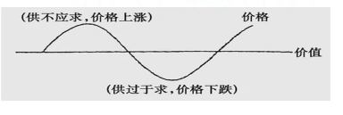
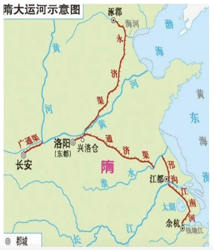
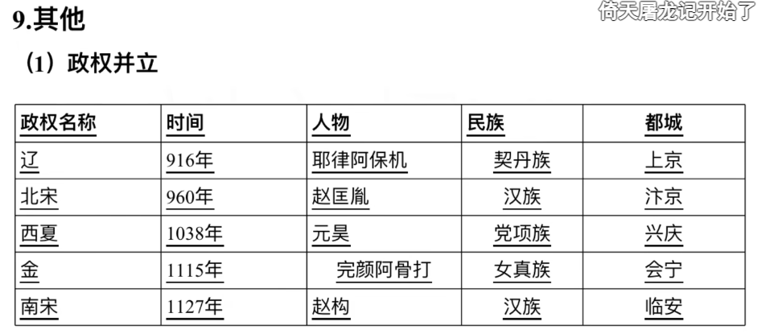
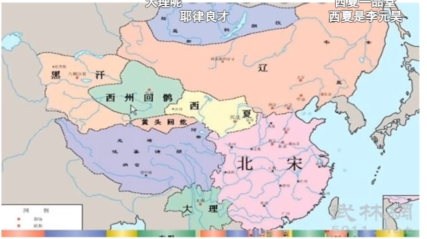
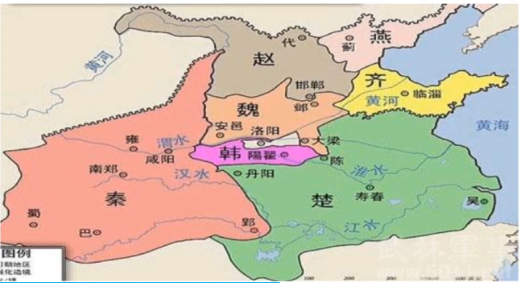

哲学概论
1. 世界观：人们对于世界以及世界关系的根本观点、看法
2. 方法论：人们认识世界、改造世界的一般方法
3. 哲学：是理论化、系统化的世界观、又是方法论
哲学与具体科学
两者是一般与个别、共性与个性的关系
区别
1. 具体科学以世界某一领域的特殊规律为研究对象
2. 哲学以整个世界的最一般规律为研究对象
联系
1. 具体科学的成果是哲学的基础
2. 哲学为具体科学的研究提供了世界观和方法论的指导
哲学的基本问题
恩格斯说全部哲学的基本问题是：思维和存在的关系问题
1. 何者为第一性
马哲正确的思维：唯物主义（存在第一性，思维第二性，存在（物质）决定思维（意识））
错误的思维：唯心主义（思维第一性，存在第二性，思维决定存在）
2. 有无同一性
正确的思维：可知论（思维可以认识存在）
错误的思维：不可知论（思维不可以认识存在）
古代朴素唯物主义
认为某种物质的具体形态是世界的本源
典型命题
关键词：金木水火土气
1. 赫拉克利特：世界是一团永恒燃烧的活火
2. 泰勒斯：水是万物的始基
3. 荀子：天行有常，不为尧存，不为桀亡
评价：坚持了唯物主义的基本方向，本质是正确的
局限性
1. 只是猜测，没有科学依据
2. 把物质（抽象概念）归结为具体的物质形态，把复杂的问题简单化了
近代形而上学唯物主义
把基本粒子的构成、物质结构、物质结构的某种属性即原子作为世界的本源
而孤立的、禁止的、片面的观点看问题，具有形而上学性，如（刻舟求剑，机器，原子）
局限性
1. 机械性（机械唯物主义）
2. 形而上学性
3. 不彻底性
辩证唯物主义和历史唯物主义（马哲）
马哲是新唯物主义，克服了形而上学唯物主义的局限性与不彻底性
实现了唯物主义和辩证法（联系、发展、全面）、唯物辩证的自然观和历史观再实践基础的统一
即唯物辩证和历史唯物主义的统一
主观唯心主义
将人的主观精神看作世界的本源
关键词：人、我、心、感觉
命题
1. 笛卡尔：我思故我在
2. 孟子：万物皆备于我
3. 陆九渊：宇宙便是吾心，吾心即是宇宙
客观唯心主义
把客观精神当成世界的本原
关键词：道、理、天、上帝、理念、绝对精神
命题
1. 老子：道是天地之根，万物之母
2. 朱熹：理在物先，理在事先
3. 柏拉图：现实世界是理念世界的影子
马克思主义与马哲
一、马克思主义哲学产生的自然科学基础
1. 细胞学说
2. 能量守恒和转化定律
3. 进化论
二、马克思主义产生的直接理论来源
1. 德国的古典哲学--马哲
2. 英国的古典政治经济学--马克思主义政治经济学
3. 英法的空想社会主义--科学社会主义
马哲是马克思主义全部学说的理论基础
马克思主义政治经济学是马哲的运用与证明
科学社会主义居于马克思主义理论体系核心和顶端
三、马克思主义的基本特征
科学性、人民性、实践性、发展性
1. 实践的观点是马克思主义首要的和基本的观点
2. 科学性与革命性的统一
四、马哲的历史变革
1. 创立了科学的实践观
2. 实现了革命性和科学性的统一
3. 实现了世界观和方法论的统一
4. 实现了唯物论和辩证法、唯物主义自然观和唯物主义历史观的结合
世界的物质性
一、物质
1. 客观实在性是物质的唯一特性
2. 世界是物质，物质是运动，运动是有规律
二、物质的存在形式和根本属性--运动
三、物质是运动的物质，运动是物质的运动
1. 脱离运动的物质是静止的，形而上学
2. 脱离物质的运动，唯心主义
四、物质的存在形式--静止
1. 运动的特殊状态，相对静止
五、运动的错误主张
1. 把相对静止夸大为绝对静止的形而上学
2. 肯定绝对运动否定相对静止的相对主义（诡辩论）
如人一次也不能踏进同一条河是错误的
人两次也不能踏进同一条河是正确的
时间和空间
1. 时间和空间是物质运动的存在形式
2. 时间特点是一维的，即一去不复返（提到珍惜时间）
3. 空间是三维的
4. 时空是有限的又是无限的，即绝对的又是相对的
意识的主观能动性
存在和思维 === 物质和意识
一、意识的起源
1. 是自然界长期发展的产物
2. 是社会历史的产物，劳动在意识的产生中起了决定性作用
二、意识的本质
1. 意识是人脑对客观存在的反映
2. 意识是人脑的机能，人脑是意识的物质器官
3. 如果脱离了人类社会，如狼孩，意识就不存在
三、意识的作用
1. 意识活动的目的性、计划性
2. 意识活动的创造性
3. 意识对客观世界的改造作用
4. 意识活动对人体活动的控制
物质和意思的辩证关系
1. 物质决定意识
2. 意识对物质有能动的反作用
3. 方法论--一切从实际出发，坚持正确意识
产生/派生都是错的，只有转化才是正确的
客观规律与主观能动性
一、规律及其客观性
1. 规律就是事物运动过程中固有的、本质的、必然的、稳定的联系
2. 规律是客观的，客观性是规律的根本特性，规律不可改变、创造、消灭
3. 规律可分为自然规律和社会规律
二、主观能动性
1. 人们能动地认识客观世界
2. 在认识的指导下能动地改造客观世界
三、辩证性
1. 尊重客观规律是发挥主观能动性的前提和基础
2. 要正确地认识必须通过实践，依靠主观能动性地发挥，利用客观规律改造世界
3. 尊重客观规律和发挥人地主观能动性是相辅相成，辩证统一
两个观点
辩证法的总特征
一. 世界是普遍联系的
1. 联系：事物之间（外部联系）与事物内部要素之间（内部联系）
2. 特点：客观性/普遍性/多样性/条件性
3. 整体和部分的辩证关系
3.1. 整体具有部分根本没有的功能，整体功能大于各个部分功能之和
3.2. 部分是指组成有机统一体的各个方面、要素及其发展全过程的某一个阶段
3.3. 不能脱离整体谈部分，如断手不是身体的一部分
4. 联系的观点是唯物辩证法的一个基本观点，要求我们必须从客观事物本身的真实联系去把握事物，去认识问题和处理问题
二. 世界是永恒发展的
1. 发展
1.1. 概念： 发展是前进的上升（好的）的运动
1.2. 实质： 新事物的产生和旧事物的灭亡
1.2.1. 新事物是合乎历史前进方向、具有远大前途的东西；旧事物是指丧失历史必然性、日趋灭亡的东西
1.2.2. 新生事物是不可战胜的
1.3. 发展与变化的关系：发展是好的运动，运动不一定是好的。如青出于蓝而胜于蓝、士别三日
2. 发展观点的方法论意义：坚持用发展的眼光去看待问题
2.1. 要把事物如实的看成一个变化发展的过程
2.2. 要坚持与时俱进，培养创新精神，促进新事物的成长
三大规律
一、 质量互变规律--揭示了 事物发展的形态和状态
1 量变、质变
1.1 量变是事物数量的增减或场所的变更，是一种逐渐的、不显著的变化
1.2 质变是事物根本性质的变化、是渐进过程的中断。
如水到100度的过程是量变（积累），到100度以上水的性质就发生了质变（液态->气态）
2. 二者辩证关系
2.1. 量变和质变是互相转化、相互渗透的辩证关系
2.1.1 量变是质变的必要准备，质量是量变的必然结果
2.1.2 总的量变中有部分质变，质变中有量变的特征
2.1.3 事物的发展总是由量变到质变，在新质的基础上又开始新的量变和新的质变，如此循环
2.1.4 事物的变化是否超出度的范围（水100度），是区分量变和质变的根本标志
3. 方法论的意义
3.1. 积极做好量的积累，创造条件，促使事物向好的反向转化
3.2. 坚持适度原则，注意分寸，防止过犹不及
3.3. 防微杜渐（千里之堤，溃于蚁穴）
二、 否定之否定规律--揭示 事物发展的方向和道路
1. 肯定事物的好，否定事物的好
2. 辩证的否定观
2.1. 包含肯定的否定，不能绝对肯定/否定，反义词为形而上学
2.2. 事物的自我否定
2.3. 实质是扬弃（取其精华，弃其糟粕）
2.4. 否定观即是发展的环节又是联系的环节
3. 否定之否定：事物发展的完整过程：肯定---否定---否定之否定
4. 规律揭示了事物发展是前进性和曲折性的统一
4.1. 事物发展的总趋势是前进上升的
4.2. 事物发展的道路是曲折的
5. 方法论
5.1. 反对肯定一切和否定一切的形而上学否定观
5.2. 对一切事物采取科学分析的态度
5.3. 把握事物发展的总趋势，正确对待前进和曲折
三、 对立统一规律
唯物辩证法的实质和核心，揭示了事物发展的 源泉和动力，揭示了普遍联系的根本内容和事物发展的内在动力
是却分辩证法和形而上学的分水岭，是事物发展的根本规律
1. 矛盾的同一性和斗争性（反义词）
1.1. 斗争性是矛盾双方之间相互分离，是绝对的、无条件的。如长和短，高和低。
1.2. 同一性是矛盾双方之间相互联系，是相对的、有条件的。对立双方在一定条件下转化。如乐极生悲，否极泰来
2. 内外因辩证关系
2.1. 含义：内因指事物的内部矛盾，外因是指事物与其他事物之间的外部矛盾
2.2. 关系： 内因是事物发展的根本原因
2.2.1. 内因是事物发展的根本原因，是变化的依据
2.2.2. 外因通过内因而起作用（师傅领进门（外因），修行在个人（内因））
2.2.3. 外因是事物发展的第二位原因，是变化的条件
3. 矛盾的普遍性和特殊性的辩证关系
3.1. 普遍性：处处有矛盾，试试有矛盾。如讳疾忌医不承认矛盾的普遍性（发现问题--不解决问题）
3.2. 特殊性：事物所包含的矛盾有其特点，是一事物区别于其他事物的本质，是事物之所以有差别的依据
3.2. 矛盾的普遍性和特殊性是共性与个性，一般与个别的关系
3.3. 普遍性存在于特殊性中，通过特殊性表现出来。如什么是水果（普遍），如苹果（特殊）
3.3. 特殊性离不开普遍性
3.4. 方法论（辩证法）：具体问题具体分析。唯物论则为：一切从实际出发
4. 矛盾的不平衡性原理（不一样）
4.1. 主要矛盾和次要矛盾的关系及其意义
4.1.1. 主要矛盾是处于支配地位起决定作用的矛盾。如打蛇打七寸，射人先射马（要做什么要先干什么）
4.1.2. 辩证关系
4.1.2.1 相互影响相互作用
4.1.2.2 主要矛盾决定和制约次要矛盾，次要矛盾也影响和反作用于主要矛盾。
4.1.2.3 二者在一定条件下可以互相转化。如国共合作
4.2. 矛盾的主要方面和次要方面的关系及其意义
4.2.1 矛盾的主要方面处于支配地位起主导作用的方面，次要方面是处于被支配地位不起主要作用的方面（也叫非主要方面）。如是药三分毒
4.2.2 辩证关系
4.2.2.1. 相互影响相互作用
4.2.2.2. 主要方面支配和决定次要方面，次要方面也影响和反作用于主要方面。
4.2.2.3. 二者在一定条件下可以互相转化
4.2.2.4. 事物的性质是由主要方面决定的
4.2.3. 两点论和重点论的辩证关系
4.2.3.1. 两点论是纪要看到主要矛盾，又要看到次要矛盾，反对一点论
4.2.3.2. 重点论是必须分清主次，反对形而上学均衡论
4.2.3.3. 坚持两点论中的重点论，重点论以两点论为前提
五对范畴--非主要
1. 原因与结果: 先因后果
2. 必然与偶然: 必然对事物发展起决定作用，偶然对事物发展起影响作用
3. 可能与现实：现实是以实现的可能，可能包含在现实事物中
4. 本质与现象： 现象是外部特征，本质是内部特征。本质是现象的根据，决定现象，总要通过现象来表现。如万有引力（本质）---苹果落地（现象）
5. 内容与形式：内容强调内部，形式强调外在。如教师的知识（内容）和教学方法（形式）。内容决定形式，形式反作用于内容
三大核心
一、实践
二、认识
三、真理
两大规律
一、认识与实践的辩证关系规律
二、认识发展规律
政治经济学基本原理
一、物质资料生产过程
1. 生产三要素：劳动者的劳动、劳动资料、劳动对象
2. 生产过程四环节：生产（决定）、分配、交换、消费
2.1. 分配、交换是生产与消费的连接
2.2. 消费对生产有反作用
2.3. 消费是生产的目的和动力
二、商品（有没有交换，有没有通过劳动而来的）
如淘宝卖的新鲜空气，人为捕获空气，可以买卖，是商品
1. 商品的二要素
1.1. 使用价值：有用性（水：解渴；电：发电）；有使用价值商品才能交换
1.2. 价值：隐藏在商品中的无差别的人类劳动
2. 使用价值是价值的物质承担者。
3. 使用价值反映了商品的自然属性（人与自然）；价值反映了商品的社会属性（人与人）。
三、劳动（具体劳动（生产面包）--创造--使用价值；抽象劳动（人工成本）--创造--价值）
1. 劳动的二重性：具体劳动（生产面包）和抽象劳动（不看具体劳动而看投入劳动的时间）
四、货币
1. 货币职能
1.1. 价值尺度与流通手段（基本职能）
1.2. 支付手段，贮藏手段(如黄金)，世界货币（派生职能）
2. 货币的流通规律
2.1. 流通中需要的货币量 = 商品价格总额（数量*价格）/货币的流通速度（转手次数）
2.2. 如流通次数越多，货币的流通速度越快，流通中需要的货币量越少。存钱的人多就要印钞票
2.3. 价格上升，数量就下降，导致通货膨胀。
五、价值规律
1. 基本内容
1.1. 商品的价值大小是由生产商品的社会必要劳动时间（单位一致）决定
1.2. 商品交换要以价值量为基础，实行等价交换
2. 表现形式
2.1. 商品价格受供求关系的影响，价格围绕价值上下波动
资本主义的制度及运行
除了劳动力为可变资本、其他为不变资本（不改变价值）
收入分配
微观经济
宏观经济
经济学名词
主要著作与理论
1. 科学管理原理----泰勒（科学管理之父）
2. 工业管理与一般管理----法约尔（经营管理之父。提出五大职能：计划、组织、控制、协调、激励）
3. 社会组织与经济组织理论----韦伯（组织理论之父）
4. 人际关系学说----梅奥（基于社会人的假设前提的管理理论）
5. 需求层次理论---马斯洛（认为人的基本需要可以归纳为（由低到高），生理需要 > 安全需要 > 社交（幸福）需要 > 尊重需要 > 自我实现需要）
6. 双因素理论---赫兹伯格（双因素包括激励因素和保健因素（消除不满））
7. 决策理论---西蒙（管理就是决策）
8. 管理过程学派---法约尔为基础，由哈罗德·孔茨等人发扬光大
9. 经验学派---彼得·德鲁克，欧内斯特·戴尔
10. 管理学概念---德鲁克（现代管理学之父）
管理学重要的原理及定律
1. 人本原理（以人为本）
2. 牢骚效应（对工作发牢骚的人比没有的公司成功的多）
3. 权变原理（情景理论--不同情景中，不同管理有不同的效果）
4. 彼得原理（高地。在一个等级制度中，没个职工趋向于上升到他所不能升任的地位）
5. 海恩法则（每一起严重事故的背后，必然有29次轻微事故和300起未遂先兆以及1000起事故隐患）
6. 帕金森定律（机构人员膨胀的原因及后果）
7. 墨菲定律（如果事情有变坏的可能，不管这种可能性多小，总会发生）
8. 手表理论（每一个人不能由两个人同时指挥）
9. 破窗理论（一个房子如果窗户破了，没有去修补，隔不久其他窗户也会被打破）
10. 鳄鱼法则（及时止损）
11. 羊群效应（从众心理）
12. 鸟笼逻辑（惯性思维）
13. 晕轮效应（光环效应--情人眼里出西施，加了滤镜）
14. 皮格马利翁效应（说你行你就行说你不行你就不行）
15. 蘑菇效应（只有自身不断成长才能得到阳光）
16. 踢猫效应（坏情绪传染）
17. 合成谬误（对个体是正确的，对整体未必正确）
18. 棘轮效应（消费习惯形成后具有不可逆性，易于向上调整难于向下调整）
行政管理
1. 方式是依法行政
2. 实质是行政管理组织对社会公共事物的组织和管理活动
一、政府的职能
1. 政治职能（对外保护国家，对内维护秩序）
2. 经济职能（宏观调控、提供公共产品和服务（刺激经济）、市场监督）
3. 文化职能（科、教、文、卫、体、娱）
4. 社会职能（社会分配、组织社会保障、生态环境、自然资源、社会服务、人口质量、计划生育）
5. 政府职能的转变：管理型（直接）向服务型（间接）
二、行政组织的分类
1. 首脑机关：中央政府或地方政府统辖全局的领导机关
2. 职能机关：执掌一定专业行政事物，隶属于领导机关或行政首长
3. 辅助机关：办公机关
4. 咨询机关：智囊机关或参谋机关
5. 派出机关：一级政府根据政务管理需要，管辖地区授权委派的代表机关
行政组织
1. 管理幅度和管理层次（金字塔）
1.1 管理层次：组织纵向划分的管理层次
1.2 管理幅度：组织横向划分的管理层次
1.3 组织规模 = 管理层次 * 管理幅度
2. 组织结构类型
2.1 直线型组织架构（单线式）
2.2 职能型组织架构（多线式）
2.3 矩阵型（又有职能又有产品）
行政决策
1. 国家决策和地方决策（依据行政决策主体地位不同）
2. 战略决策（全局性/原子性）和战术决策（基础性）（依据行政决策涉及问题的规模和影响程度的不同）
3. 程序化决策（重复性高）和非程序化决策（按决策问题的重复程度不同）
4. 确定性决策（自然状态和客观条件能确定）、不确定性决策（状态和条件不清楚）、风险型决策（状态和条件比较清楚）（依据决策条件和结果不同）
5. 最优决策和满意决策（依据决策目标不同）
6. 个人决策和集体决策（依据决策主体不同）
7. 经验决策和科学决策（按照使用的决策方法的先进程度）
行政决策过程
1. 发现问题---起点
2. 分析---基础
3. 综合评价、优选方案---关键
4. 决策实施，追踪反馈---重要组成部分
行政执行
行政执行是评价行政管理工作好坏的最主要依据
层次：中央级（国），省级，市级，县级，乡级
手段：法律手段，行政手段（强制性），经济手段（最主要）
行政沟通
1. 正式（开会）沟通/非正式（私下）沟通（按沟通渠道划分）
2. 单向（A到B）沟通/双向沟通（按沟通路线划分）
3. 下行沟通/上行沟通/平行沟通（按信息流向划分）
4. 单联式沟通/聚联式沟通/互联式沟通（按信息沟通的结构模式划分）
行政监督
1. 各类监督主体依法对国家行政机关及其公务员进行监督
2. 作用：预防/矫正/反馈
3. 类型
3.1 行政监督的主体划分
3.1.1 政党（中国共产党和民主党）
3.1.2 权力机关（人大及其常委会）
3.1.3 司法机关（人民法院和人民检察院）
3.1.4 社会监督
3.1.5 行政机关自身
3.2 行政监督的性质划分
3.2.1 一般监督（指国家机关在上、下级行政隶属关系上长生的一种互相监督）
3.2.2 专门监督
3.3 行政监督的时间划分
3.3.1 事前监督
3.3.2 事中监督
3.3.3 事后监督
公共危机
1. 政府危机管理，解决政府对外交往和对内管理中处于危险和困难境地的问题
2. 处理原则：时间性/效率性/协同性/科学性
3. 分级：
3.1 一级（特别重大）：红色，需要国省市县共同协调处理
3.2 二级（重大）：橙色，需要省市县
3.3 三级（较重）：黄色，需要市县
3.4 四级（一般）：蓝色，需要县
含义
公务文书，是国家机关、社会团体、企事业单位使用的具有规范体式和法定效用
包括：通用公文（法定公文）、专用公文
特点
1. 政治性
2. 规范性
3. 法定性
4. 工具性
5. 时效性
公文种类：文种（两决两公加三通，报请批议函和纪，最后再加令和意）
1. 决议：通过会议讨论通过的重大决策事项，如《关于建国以来党的若干历史问题的决议》
决定：作出决策，奖惩，变更或撤销下级机关，如《关于接受***辞去职务请求的决定》
2. 公报：适用与公布重要决定或重大事项
公告：向国内外宣布重要事项（权威性）
3. 通告：一定范围内（比公告范围小）公布应当遵守或周知的事项(专业性)
通知：发布、传达要求下级机关执行和有关单位周知或执行的事项，批转，转发公文（未发生）
通报：表彰先进、批评错误、传达重要精神和告知重要情况（已发生）
4. 报告：向上级机关汇报工作
请示：向上级机关请求指示
批复：答复下级机关请示
5. 命令：公布行政法规和规章，宣布施行重大强制性措施，嘉奖有关单位和人员（嘉奖令）
意见：对重要问题提出见解和处理方法
6. 议案：各级人民政府按照法律程序向同级人民代表大会或者人民代表大会常委员会提请审议事项
函：平级或不相隶属机关之间工作、询问等事项
纪要：记载会议的主要情况和事项
原始社会
一、原始居民
1. 云南元谋人，距今年代170万年，意义：境内目前已确定得最早人类。社会组织：原始人群
2. 陕西蓝田人，距今年代80万年，意义：最早直立行走。
3. 北京周口店人，距今年代70万年，意义：使用天然火，并保存火种。
4. 北京山顶洞人，距今年代3万年，意义：人工取火，磨光和钻孔技术。社会组织：氏族公社（母系--然后才是父系）
二、氏族社会（农耕）
1. 河姆渡遗址（南方）：距今7千年，生活地域：长江流域。生产状况：水稻，耒耜（lei三声si四声）。生活状况：干栏氏房屋、黑陶。母系氏族
2. 半坡遗址（北方）：约五六千年，生活地域：黄河流域。生产状况：磨制工具、粟。生活状况：半地穴式房屋，彩陶。母系氏族
3. 大汶口遗址（北方）：约四六千年，生活地域：黄河流域。生产状况：私有制。生活状况：多为地面建筑，彩陶。父系氏族
备注：五谷：稻（稻谷）、黍（shu三声 黄米）、稷（ji四声 粟米/小米）、麦（小麦）、菽（shu一声 大豆）
或：麻（大麻）、黍（shu三声 黄米）、稷（ji四声 粟米/小米）、麦（小麦）、菽（shu一声 大豆）
备注：六畜：马、牛、羊、鸡、狗、猪
三、三皇五帝
1. 三皇
1.1. 伏羲氏（八卦）、女娲、神农是传说中三皇最流行的一种说法
1.2. 战国诸子百家著作：有巢氏、 燧人氏、伏羲氏、神农氏
3. 司马迁史记记述五帝：黄帝、颛顼（zhuanxu都一声）、帝喾（diku都四声）、尧、舜
3.1. 黄帝：（与炎帝）阪泉之战，黄帝获胜。人文始祖。指南车。养蚕缫（sao一声）丝养（嫘（lei三声）祖）。
典故：龙去鼎湖（指黄帝去世）/轩辕氏（指黄帝）
战争：涿（zhuo一声）鹿之战（黄帝和炎帝打蚩尤获胜）
3.2 舜：尧舜禹。舜耕历山
备注：八卦：坤巽震坎离
乾--天
坤--地
巽（xun四声）--风
坎（kan三声）--水
离--火
艮（gen四声）--山
兑--泽
四、夏商周时期
1. 夏朝
1.1 禹传子启（大禹治水，三顾家门而不入），世袭制代替禅让制，定都阳城，最早的奴隶制国家
1.2 二里头文化遗址（河南洛阳，最早宫殿遗址）
1.3 历法：夏历《夏小正》（看月亮运行轨迹---阴历。农历（阴阳合历，19年7闰））
1.4 商汤灭夏（夏桀无道，明条之战）
2. 商朝
2.1 青铜器：后母戊鼎，是我国迄今考古发现最大的青铜器
2.2 甲骨文：刻在龟甲和兽骨上，汉字的源头。甲骨文之父--王懿荣
备注：甲骨文---金文（铭）---大篆---小篆（秦）---隶书（汉，古今汉字分水岭，蚕头燕尾一波三折）---草书---楷书（正书）---行书
备注：四大古文字：甲骨文/象形文/楔形文/玛雅文
2.3 盘庚迁殷：五次迁都，直到盘庚迁都于殷（河南安阳）
2.4 商的灭亡：牧野之战（武王伐纣，临阵倒戈--商纣王军队倒戈帮助周武王）
3. 西周
3.1 西周实行分封制（天子--诸侯--卿大夫--士大夫）、宗法制（嫡长子继承制）、井田制
备注：爵位：公侯伯子男
3.2 国人暴动
3.3 灭亡：周幽王“烽火戏诸侯”
4. 东周
4.1 春秋（奴隶结束）
4.1.1 春秋五霸
4.1.1.1 说法一：齐恒公、晋文公、楚庄王、秦穆公、宋襄（xiang一声）公
4.1.1.1 说法二（常考）：齐恒公、晋文公、楚庄王、吴王阖闾（helv都二声）、越王勾践
4.1.2 典故：
4.1.2.1 齐恒公是春秋第一个霸主：管鲍之交、一箭之仇、长勺之战（一鼓作气）、尊王攘夷、老马识途
4.1.2.2 晋文公：退避三舍（城濮之战）、秦晋之好、寒食节的由来（纪念介子推）
4.1.2.3 楚庄王：一鸣惊人、问鼎中原、饮马黄河
4.1.2.4 勾践：卧薪尝胆、鸟尽弓藏、兔死狗烹（文种范蠡（li二声））
4.2 战国（封建开始）
4.2.1 战国七雄
4.2.1.1 齐、楚、燕、韩、赵、魏、秦
4.2.1.1 秦先灭韩、赵、魏、楚、燕、齐
备注： 跨域时期事件：田氏代齐，三家分晋（韩赵魏）
4.2.2 主要战争
4.2.2.1 桂陵之战---齐魏---围魏救赵（齐国孙膑战胜魏国庞涓）
4.2.2.2 马陵之战---齐魏---减灶诱敌（齐国孙膑战胜魏国庞涓）
4.2.2.3 长平之战---秦赵---纸上谈兵（赵国廉颇，因为赵括，赵国败，秦国白起胜）
4.2.3 主要变法
4.2.3.1 秦孝公用商鞅变法: 徙（xi三声）木立信、作法自毙、（商鞅被）五马分尸
4.2.3.2 经济上：废除井田制，实行土地私有；实行重农抑商；统一度量衡（测量长度/量体积/衡重量）
4.2.3.3 政治上：编制户籍，连坐；推行县制
4.2.3.4 军事上：奖励军功
4.2.3.5 魏国李悝（kui一声）--法经（第一部地主阶级法典）/平籴（di二声）法（粮食多平价收购/粮食少平价出售，谷贱伤农/谷贵伤民）
4.2.4 战国四君子
4.2.4.1 信陵君（魏）：窃符救赵（魏符）
4.2.4.2 孟尝君（齐）：鸡鸣狗盗（被秦王扣留）
4.2.4.3 平原君（赵）：利令智昏、毛遂自荐（去楚国）、脱颖而出、一言九鼎
4.2.4.4 春申君（楚）：移花接木
4.2.5 其他
4.2.5.1 水利：秦国时期修筑都江堰（水旱从人不知饥馑，时无荒年）：李冰父子
4.2.5.2 科学成就：战国时期发明”司南“，世界最早指南针
战国时期甘德、石申二人测定的恒星记录（甘石星经），世界最早天文学著作。
黄帝内经，记载我国最早的人体解剖知识/现存最早医书
备注：中医四大经典：黄帝内经，难经（扁鹊），伤寒杂病论（张仲景），神农本草经
别称：岐黄（崎伯和黄帝讨论医术）、青囊（nang二声，华佗）、杏林、悬壶
五、秦汉时期（前221年）
1. 秦朝（嬴政统一中央集权封建第一人）
1.1 统一全国
1.1.1 政治上：三公九卿制、地方推行郡县制
备注：三公：丞相：行政；太尉：军事；御史大夫：监察
九卿：丰常；廷尉等
郡县制
1.1.2 经济上：统一货币衡量
1.1.3 思想上：焚书坑儒，统一文字（小篆）
1.1.4 军事上：北击匈奴，修建长城，开凿灵渠
备注：古代兄弟从大到小排序：伯仲叔季；孟与伯排第一，孟为小妾生的；6个孩子345都为叔
古代民间四大传说：孟姜女，牛郎织女，梁山伯与祝英台，白蛇传
1.2 沙丘事变（秦始皇在沙丘去世，赵高李斯篡改遗诏，加速清朝灭亡）
1.3 大泽乡起义（前209年，陈胜，吴广举起了中国历史第一次大规模农民起义---王侯将相宁有种乎/揭竿而起/燕雀安知鸿鹄之志）
1.4 巨鹿之战（项羽攻秦---破釜沉舟，刘邦---约法三章）
1.5 垓下之战（刘邦与项羽，鸿门宴）
2. 西汉
2.1 前202年，刘邦称帝（汉高祖），建立汉朝，定都长安
备注：汉中三杰：张良（运筹帷幄，孺子可教），萧何（萧规曹随，成也萧何败也萧何），韩信（胯下之辱，国士无双，多多益善）
诸吕之乱：西汉初期，刘邦死后吕氏外戚作乱
2.2 文景之治：黄老之术，与民休息
2.3 汉武帝时期全盛时期
2.3.1 政治上：建立中外朝制度（中朝制约外朝），设置刺史地方，推行推恩令
2.3.2 经济上：统一铸五铢钱（铢 重量单位），财政权集中于中央
2.3.3 思想上：罢黜（chu四声）百家，独尊儒术（董仲舒），设立太学
备注：董仲舒三纲（君为臣纲，父为子纲，夫为妻纲及妻子听丈夫的话）五常（仁义礼智信）
2.4 张骞（qian一声）出使西域（长安---大秦）：丝绸之路（西域的葡萄、苜蓿（muxu四声）、石榴、胡豆、胡桃、良马，中原的丝织品、金属工具，铸铁、凿井技术）
2.5 西域都护府（前60年，由汉宣帝设立，开始对新疆进行管辖）
2.6 卫青、霍去病（甘肃酒泉，封狼居胥（xu一声））大破匈奴
2.7 昭君出塞（前33年，汉元帝将宫女王昭君嫁给匈奴韩邪单于）
备注：古代四大美女：西施（沉鱼），昭君（落雁），貂蝉（闭月），杨玉环（羞花）
2.8 王莽改制：赤眉绿林起义
3. 东汉
3.1 刘秀（夺席谈经），公元2年建立东汉，定都洛阳，史称 光武中兴
3.2 班超经营西域（投笔从戎，不入虎穴焉得虎子）
3.3 黄巾起义（张角，“苍天已死，黄天当立，岁在甲子，天下大吉”）
六、三国魏晋南北朝
1. 东汉--魏蜀吴--西晋（司马炎）/东晋（司马睿）--北朝/南朝（宋齐梁陈）--随
2. 三国到两晋
2.1 三分天下
2.1.1 200年，官渡之战，曹操（以少胜多）/袁绍，奠定了统一北方的基础
2.1.2 209年，赤壁之战，孙刘联军（以少胜多）/曹操，曹操败，三国鼎立
2.1.3 夷陵之战，蜀吴两国，陆逊火烧联营
备注：诸葛亮三次火攻曹操于博望坡，新野，赤壁
典故： 曹操（孟德献刀/煮酒论英雄/官渡之战/赤壁之战/华容道/十八路诸侯起义/杀吕伯奢一家/白门楼收张辽）
刘备（桃园三结义/三英战吕布/三让徐州/三顾茅庐/跃马檀溪（的卢）/白帝城托孤）
3. 南北朝时期
3.1 北魏孝文帝改革（迁都洛阳，学汉语/穿汉服）
3.2 淝水之战（前秦/东晋胜，”风声鹤唳，草木皆兵“/投鞭断流）
七、隋唐时期
1. 隋朝（长安）
1.1 开皇之治：隋文帝杨坚
1.2 隋炀帝开通大运河：永济渠，通济渠，江南河，邗（han二声）沟河
2. 唐朝（长安）
2.1 玄武门之变：626 秦王李世民杀太子李建成和齐王李元吉
2.2 贞观之治：唐太宗李世民
备注：凌烟阁二十四功臣--由唐代画师、建筑设计师阎立本图画
2.3 贞观遗风：武则天
2.4 开元盛世：唐玄宗（李隆基），
2.5 安史之乱：由盛转衰，由安禄山、史思明发动的叛乱（杨玉环一家，奸相李林甫）
2.6 黄巢起义：加速了唐朝的灭亡
2.7 科举制：分科考试（隋文帝）---进士科，考察对时事的看法（隋炀帝）---殿试和武举（武则天）
2.8 三省六部制
2.8.1 三省
2.8.1.1 尚书省：最高新政机构、负责执行国家的重要政令
2.8.1.2 门下省：审议机构、负责审核政令
2.8.1.3 中书省：决策机构、负责草拟和颁发皇帝的诏令
2.8.2 六部（隶属尚书省）
2.8.2.1 史部：负责考核，任免四品以下官员
2.8.2.2 户部：负责财政、国库
2.8.2.3 礼部：负责典礼、祭祀、贡举（如科举制）
2.8.2.4 兵部：负责军事
2.8.2.5 刑部：负责司法
2.8.2.6 工部：负责工程建设
备注：五官：
1. 司马：军事
2. 司空：水利、工程
3. 司徒：民政、户籍
4. 司士：纠察百官
5. 司寇：刑狱
2.9 其他
2.9.1 农业：曲辕犁
2.9.2 茶叶：茶经----陆羽（茶神），521（国际茶日）
2.9.3 商业：市
八、宋元时期
1. 宋朝
1.1 陈桥驿兵变：建立北宋、定都汴京（今开封），世称宋太祖
1.2 杯酒释兵权：北宋初年，宋太祖为了巩固统治，设酒宴，解除了石守信等人的兵权
1.3 澶（chan二声）渊之盟：签订于宋真宗时期，北宋与辽
1.4 靖康之变：1127年，金国掳（lu三声）宋徽宗、宋钦宗二帝，北宋灭亡
1.5 南宋建立：1127年，赵构称帝，应天府南京（河南商丘），后定都临安（杭州）
1.6 岳飞抗金：南宋初年
1.7 绍兴和议：1141年，宋金南北对持
1.8 文天祥抗元：人生自古谁无死《过零丁洋》
1.9 其他
 备注：地方古代别称
上京----内蒙
汴京/汴梁/东京----开封
兴庆----宁夏
会宁----黑龙江
临安----杭州
姑苏----苏州
蓉城/锦官城----成都
金陵/石头城/江宁/建业/建康----南京
广陵----扬州
燕京/大都----北京
1.9.2 宋代改革
1.9.2.1 庆历新政：1043年，范仲淹（）主持。澄清吏治，富国强兵，厉行法治
备注：灵乌赋：一为梅尧臣对范仲淹的劝慰之文，一为范仲淹回梅尧臣的劝慰之文（宁鸣而死，不默而生）
1.9.2.2 王安石变法：1069年，又称熙宁变法，青苗法/免疫法/方田均税法/农田水利法/事易法/保甲法/将兵法/均输法；变法失败； 十一世纪伟大的改革家
1.10 经济
1.10.1 北宋兴起的景德镇（江西）：著名瓷都
1.10.2 北宋前期四川地区出现世界最早的纸币”交子“
1.10.3 南宋时期，经济重心由北方转到了南方
1.10.4 海上贸易专门机构：市舶司，管理对外贸易
1.10.5 重要港口：明州（宁波），杭州，广州，泉州（最大）
1.11 四大发明：指南针、印刷术、火药、造纸术
2. 元朝
2.1 铁木真，成吉思汗，成吉思意思为大海，汗为大汗
2.2 1271年，元世祖---忽必烈（成吉思汗孙子）建立元朝
2.3 行省制度
2.4 马可波罗来华
2.5 设置政院（澎湖巡检司管辖台湾）、管理西藏地区，西藏正式成为中央政府直接管辖的地方行政区域
2.6 官修农书：农桑辑要
九、明清时期
1. 明朝：1368年，明太祖---朱元璋，定都南京，后明成祖---朱棣迁都北京
备注：四大传统：春节，清明，端午，中秋（月饼在朱元璋反元期间流行）
1.1. 政治制度
1.2.1 中央：废丞相权分六部
1.2.1.2 地方：三司分权
1.2.3 厂卫特务机构（东厂、西厂、锦衣卫）
1.2.4 八股取士，加强思想控制（大明律）
1.2.5 经济与对外交流
1.2.5.1 张居正”一鞭法改革“
1.2.5.1.2 郑和下西洋：明成祖时期，1405-1433年7下西洋，从刘家港到非洲东海岸和红海沿岸
1.2.5.3 农作物：原产美洲的甘薯、玉米、马铃薯、烟草、辣椒传入中国
1.2.5.4 科技：利玛窦带来西方的科技著作，徐光启《泰西水法》引入欧洲水利技术
1.2.5.5 海防：明朝戚继光（封侯非我意，但愿海波平）抗倭，郑成功从荷兰殖民者手中收复台湾（后由刘铭传担任台湾首任巡抚）
2. 清朝
2.1 建立：1616年：后金（女真首领努尔哈赤）
1636年，皇太极在沈阳称帝，改国号为清，改女真族为满洲
1644年，李自成领导农民军攻破北京城，结束明朝的统治。驻守山海关的吴三桂（明朝将领）引清军入关，击败农民军，清军统一全国定都北京
2.2 巩固发展
2.2.1 康熙：平定三藩之乱：平西王（吴三桂）/平南王（尚可喜）/靖南王（耿精忠）；灭台湾郑氏政权，设立台湾府；两次击退盘踞雅克萨的俄军，签订了尼布楚条约
2.2.2 雍正：实行密折制度，设立军机处；全面实行改土归流制度，废除土司制度；经济上实行摊丁入庙（废除人头税）
2.2.3 乾隆：平定天山南路的大小和卓叛乱，改西域为新疆；1762年，清朝设伊犁将军，统管新疆地区
2.3 重农抑商和海禁政策（严格限制商人活动）
外国资本主义入侵与近代中国半殖民地半封建社会性质
1. 1840-1842, （1839年林则徐虎门销烟）第一次鸦片战争，清朝对英国，签订《南京条约》，标志着中国开始进入半殖民地半封建社会
2. 1856-1860，第二次鸦片战争，清朝对英法，签订《北京条约》，这之后清朝成立总理各国事务衙门，标志清朝中央政府开始半殖民地化
3. 1894-1895，甲午中日战争，签订《马关条约》（丧权辱国），中国丧失了对朝鲜的宗主权，巨额的战争赔款加深了中国的半殖民地化
4. 1900，八国联军侵华，1901年签订《辛丑条约》，中国完全沦为半殖民地半封建国家
备注：八国：英、美、俄、日、法、德、意、奥匈帝国
古代记时：天干地支
天干有十个，分别是甲、乙、丙、丁、戊、己、庚、辛、壬、癸
地支有十二个，分别是子、丑、寅、卯、辰、巳（si四声）、午、未、申、酉（you三声）、戌、亥（hai四声）
计算方式：天干：（已知年份-3）/10；地支：（已知年份-3）/12
如1901年，天支=1901-3=1898/10=8=辛；地支=1898/12=2=丑